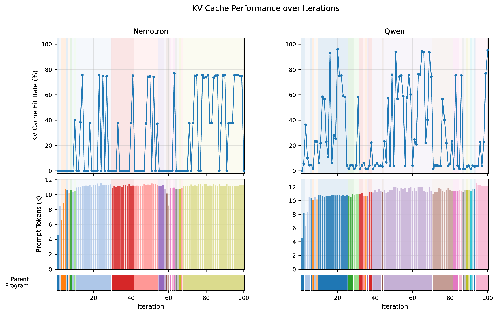
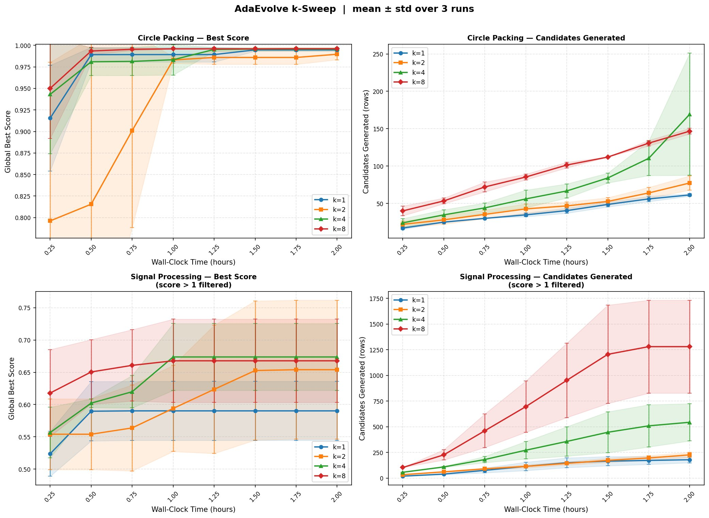

Accelerating LLM Guided Search with Parallel Exploration
AI systems can now discover things. FunSearch (Dec 2023) found new mathematical constructions. AlphaEvolve (May 2025) turned up a faster matrix multiplication algorithm for the first time in 56 years. A large language model proposing edits to a piece of code, an evaluator scoring them, the best edits surviving and proliferating: this loop has started producing real scientific output.
In May 2026, Recursive Superintelligence was funded $650M at a $4.65B valuation with a one-line thesis: AI that improves AI, in an open-ended evolutionary loop (Recursive, May 2026). Yann LeCun's AMI Labs and David Silver's Ineffable Intelligence are chasing related theses. On the academic side, the pace has matched the funding: AdaEvolve (Cemri et al., Feb 2026), CodeEvolve (Mar 2026), OpenEvolve (May 2025), TTT-Discover (Jan 2026), CORAL (Apr 2026), OR-Agent (Feb 2026), and SeaEvo (Apr 2026) have all extended the FunSearch/AlphaEvolve recipe in the past six months.
But step inside the loop and most of that "discovery" is a GPU doing the same arithmetic over and over. Every call into the LLM is similar to the last one. And on a typical deployment, nobody told the serving stack.
In our recent course project we measured this in the simplest way we could think of: cache hit rate. On a vanilla AdaEvolve (Feb 2026)-style setup serving Qwen3.5-27B-FP8 with vLLM, only 18.4% of the prompt tokens we sent ever hit the prefix cache.
We pushed that number to 94.2%, and per-call wall time fell by 9.8×, by making one change to the search loop. The change is small. The tradeoff it forces you to make is the interesting part.
What if you asked the LLM the same question eight times, on purpose, and let the GPU only do the work once?
What is LLM-guided discovery, anyway?
The loop is older than the LLM in it. You start with a working program. A "creative" component proposes an edit. An evaluator scores the edited program. The best programs survive, get edited again, scored again, then survive again. Repeat thousands of times. That is evolutionary search.
The LLM is only a recent addition. In place of random mutations, you ask a language model to read the current program, think about what might be improved, and write a new version. FunSearch (Dec 2023) did this for combinatorics. AlphaEvolve (May 2025) scaled it up. OpenEvolve (2025) and AdaEvolve (Feb 2026) are open-source successors. The family is growing.
This is also, more or less, how humans do science. You have a working idea. You tweak it. You run an experiment. You keep what works and throw out what doesn't. Discovery is iteration, with mutation provided by whatever creative engine you happen to have lying around. Until 2023, scientists were the de facto creative engine. Now, large language models can be them too.
The loop is powerful, but every step is an LLM call, and LLM calls aren't free.
Why open models change the game
When you run discovery with a closed-source model like GPT, Claude, or Gemini, the inference stack is a locked black box. You pay per token. You can't see the cache. You can't see the scheduler. You can't restructure how requests hit the GPU. Inference optimization is both a pricing and a systems problem.
When you run discovery against an open-weight model like Qwen3, Llama, or DeepSeek on your own vLLM endpoint, the stack belongs to you. vLLM is the most widely used open-source inference engine; it manages the GPU's memory, schedules requests, and keeps a KV cache: the intermediate per-token values the model can reuse as it continues to produce tokens. When you start a new prompt that begins with the same tokens as a previous one, vLLM does not need to recompute those values. This is called prefix caching. The expensive part of an LLM call, reading the prompt, is called prefill. A cache hit avoids prefill.
LLM-guided discovery requires very structured prompts. Zoom into the prompt our search loop sends. It has three parts:
- System prompt: the problem statement, evaluator code, and framework instructions. Around 200 tokens. Identical across iterations.
- Current parent program: the candidate being mutated. Around 1,500 tokens. Changes every iteration.
- Sibling history: a window of other programs from the same population. Around 8,000 tokens. Changes every iteration.
The bulk of the prompt is the parent and the siblings, and both move every step.
vLLM's prefix cache works by hashing fixed-size blocks of tokens at the start of the prompt. Matching blocks at the front are reused; the cache breaks at the first diverging token. The system prompt is small, only a few blocks. As soon as the parent program starts, the bytes diverge from the previous iteration, and the cache breaks.
Different parent program (hit rate 0%)
Same parent program (hit rate 34%)

The result: iteration N+1 looks almost identical to iteration N to a human (same task, same structure, similar code), but to the cache it is mostly a fresh prompt. Only 18.4% hit rate, averaged across thousands of calls. again.
What you pay vs. what the GPU actually does
Pricing is starting to split along workload axes.
On the OpenAI side, cached input tokens are billed at roughly 10% of uncached input (e.g. GPT-5.5 at ~$5.00/1M tokens uncached vs. ~$0.50/1M tokens cached, OpenAI, May 2026). The batch tier give a flat 50% discount in exchange for relaxed latency (OpenAI prompt caching cookbook, Feb 2026). Anthropic's API works similarly: cache reads are 10% of the standard input price, batch is 50% off (Anthropic pricing, May 2026).
Claude Code goes further, splitting the human-in-the-loop path from the automated path. Interactive terminal use is billed against a flat-rate Pro or Max subscription, while automated pipelines on the same model are billed per-token through the API (Claude Code pricing, Apr 2026). The split is a rough proxy for the underlying GPU behavior: an interactive session reuses the same context across turns and gets near-perfect cache hits, while one-shot API calls do not. The pricing is starting to track the systems reality, but only crudely. As systems-level optimizations improve, pricing will likely fragment further: discounts for prompts the provider can confirm are amenable to prefix reuse, surcharges for cache-hostile patterns, and probably a per-iteration credit for batched-decode workloads.
Why should you care?
Discovery itself is the prize. AlphaEvolve (May 2025) rediscovered a 56-year-old matrix multiplication result and improved on it. These systems are already producing real scientific output. Anything that makes them faster makes more discoveries reachable.
Open weights let us measure what we otherwise could not see. Systems-level optimizations like prompt-shape-aware batching benefit closed providers too; they are just hidden inside the API. The reason we ran this experiment on Qwen3 + vLLM was not that the trick only works on open models, but that owning the stack let us measure cache hit rate end-to-end and tune the prompt cadence against it. The lesson generalizes to anyone running a structured LLM workload, whether the model weights are public or not.
Wall-clock time gates real research, and also gates the bill. A two-hour experiment you can run five times a day enables iteration; a twenty-hour one does not. And the same speedup translates straight into cost on a metered API: if someone else is scaling the compute, a 9.8× wall-clock reduction is a 9.8× reduction in the bill on the prefilled portion of each call. Efficiency wins land twice.
The fix, and the tradeoff it buys you
Same prompt, K times
We can't make the prompt static across iterations without breaking the search itself. The parent program is supposed to evolve. But within a single iteration, nothing forces us to make only one LLM call.
The change: sample one parent, build one prompt, fire that exact same prompt into the model K times in parallel. The first call prefills the KV cache. The other K−1 calls find the cache already populated and inherit it for free. Only the decoded output differs, and we keep the K children diverse by spreading temperature across them (a decode-time parameter that controls randomness, and crucially does not affect the cache key).
The cache hit rate within a single batch goes from "basically zero" to "basically perfect." Across the whole run, overall hit rate climbs from ~20% to ~85% at K=8.
The tradeoff you just made
Here's the part that matters. One iteration with K=8 is not the same as eight iterations with K=1.
Eight iterations of K=1 sample eight different parents from the database. Each LLM call explores a different region of the search space. High exploration, high GPU cost.
One iteration of K=8 samples one parent and generates eight variations of it. Lower exploration (the eight children are siblings, not cousins), but the LLM cost is roughly one-eighth of the sequential version, because seven of those eight calls hit the cache. So K-batching is genuinely cheaper per candidate. The price is that each candidate is more correlated with its siblings.
The empirical question is whether the throughput win beats the diversity loss.
One detail worth surfacing: how much a higher K helps depends on how long the LLM's output is. On a circle-packing benchmark, generated solutions average around 1,500 output tokens and range from roughly 800 to 2,200. Decode time scales with output length, so when generations are long, batching K parallel decodes off the same cached prefix produces large absolute time savings. When generations are short (a few hundred tokens), most of the per-call time is the prefill that batching already eliminates, and there is less left to win by raising K. In other words: K pays off most when each child is expensive to generate, not just expensive to prompt.
Visual #3: The K knob
Loading interactive widget…
Does the tradeoff pay off?
The headline numbers, all measured on one H100 80GB running Qwen3.5-27B-FP8 with vLLM 0.19.1:
- Effective cache hit rate: 18.4% → 94.2%.
- Per-candidate LLM time: 4.7×–6.2× faster from K=1 to K=8 across the two benchmarks. On signal processing, 28.5s → 4.6s per candidate. On circle packing, 65.7s → 14.0s.
- On signal processing at K=8, the system generates roughly 8× more candidates in the same wall-clock window as K=1.
Now the tradeoff in numbers. Per-candidate improvement rate on circle packing drops from 9.8% at K=1 to 4.3% at K=8. The siblings really are more correlated than independently-sampled parents would be. But because we are generating so many more candidates per hour, total improvement per hour still favors higher K, until the search saturates.
Visual #5: Best score vs. wall-clock time
Loading interactive widget…
Show the static figure from the paper instead

Visual #5b: Candidates generated vs. wall-clock time
Loading interactive widget…
The honest caveat: two benchmarks, three random seeds per condition, one model, one GPU configuration. Don't read these numbers as the universal answer for every iterative LLM workload. Read them as one well-instrumented case study of a pattern we expect is general.
Speculative pipelining (the part that needs further improvement)
While the LLM is generating K candidates, the evaluator sits idle. While the evaluator is scoring them, the LLM sits idle. In hardware terms: during LLM generation the GPU is saturated and the CPU is mostly waiting; during evaluation (which on these benchmarks is primarily CPU-bound numerical scoring) the CPU is saturated and the GPU sits at near-zero utilization. The two phases together leave one side or the other under-used for most of every iteration. We tried to close that gap with speculative pipelining: at the end of each iteration, we immediately launch the next iteration's LLM calls in the background, betting that the sampler will again pick the current global best as the parent. If the bet is right, the GPU starts decoding the next batch while the CPU is still finishing this batch's evaluation, and those outputs are already in-flight or complete when the next iteration formally starts (spec-hit). If the sampler picks a different parent, the speculative tasks are cancelled and fresh calls are issued (spec-miss).
Speculation hit dynamics: LLM gen time per iteration
Loading interactive widget…
On throughput, speculation pays off: the pipeline overlap lets the system produce more candidates in the same wall-clock window.
Spec. vs. standard: candidates generated vs. wall-clock time (circle packing)
Loading interactive widget…
However, it affects the evolvement quality. At K=4 this was a mild win on wall-clock time with only a small effect on quality. At K=8 it broke things in an interesting way. The speculative prompt was built before the current iteration's K children had been added to the database, so the sibling-history block was stale by K entries. The system was faster, but the search was working with an out-of-date view of the population, and on circle packing, K=8 with speculation stagnated near 0.975 while non-speculative reached 0.999.
The fix is simple: all K children from the current iteration are inserted into the speculation prompt before evaluation finishes, so the next iteration's speculative calls always see a fully up-to-date population. With this change, K=8 speculation on circle packing now converges to 0.999, matching and slightly exceeding the standard run, though it still shows some early-stage degradation before catching up.
Spec. vs. standard: best score vs. wall-clock time (circle packing)
Loading interactive widget…
This is an unflattering result and we are reporting it on purpose. Systems wins and search wins are not automatically the same thing, and a 1.6× speedup that costs you the answer is not a speedup.
Why this matters for you
If you run LLMs locally for any structured workload, whether evolutionary search, agent loops, batched RAG, evaluation harnesses, or self-consistency sampling, the same principle applies. Look at your prompt structure. Look at what's static and what's dynamic. Ask whether the serving stack is exploiting that structure.
The deeper lesson: when you control the stack, prompt engineering and systems engineering stop being separate disciplines. The shape of your prompt, and the cadence with which you issue calls, is a systems decision.
The exploration-versus-exploitation tradeoff isn't unique to evolutionary search either. Any iterative process that calls an LLM in a loop faces some version of "batch from the same node or expand to new nodes." Self-consistency sampling, ReAct agents, tree-of-thought search: same shape, different costume.
One small bonus we didn't plan for: K-batched generation produces exactly the (prompt, K responses, reward) tuples that GRPO (Feb 2024) uses for reinforcement-learning training. The batching that started as a caching trick is also a training-data collection mechanism. We didn't run a GRPO loop in the paper, but the data shape lines up cleanly, and that feels like an opening.
What's next
A short list of things we'd like to chase, in roughly increasing order of ambition:
- Adaptive K. The optimal K isn't constant. Early in search you want exploration; late in search you want exploitation. A scheduler that picks K from stagnation signals on the island is a natural next step.
- Approximate evaluation in the pipeline. Full evaluation is often the slowest piece of the loop. On any task where a cheap proxy score correlates well with the true score (subsampled test cases, lower-fidelity simulators, learned reward models), running the proxy first and reserving the full evaluator for promising candidates is another speculative win. The pattern mirrors the LLM-side speculation we already do: bet on the likely outcome, pay full cost only when the bet matters.
- A smarter speculator. Our current predictor over-targets the best program, which is what caused the K=8 quality regression. Mixing exploitation and exploration targets in the prediction should fix it.
- Persistent KV cache. Tools like LMCache (Oct 2025) let cached blocks survive request boundaries and even server restarts. Persistent KV plus batching could push hit rates closer to the theoretical ceiling.
- Multi-GPU. We used one H100 out of eight. Disaggregated prefill and decode (DistServe, Splitwise, Mooncake) opens another axis to exploit.
- Online policy improvement. Feed the (prompt, K responses, reward) tuples into a GRPO loop. The system gets faster and the model gets better as it searches.
- Other domains. Anywhere a prompt has a stable prefix and a variable suffix (agents, ReAct, structured RAG), the same playbook applies.
Closing
Discovery is iteration. Iteration is bottlenecked by how fast you can try the next thing. Whether to try the same thing eight ways or eight different things once is a choice every researcher makes, usually without thinking about it. It turns out the LLM serving stack rewards one of those choices much more than the other.
The next time you watch a progress bar crawl, ask what the GPU is actually doing. It might be doing the same thing it just finished doing, and you might be able to ask it K things at once.